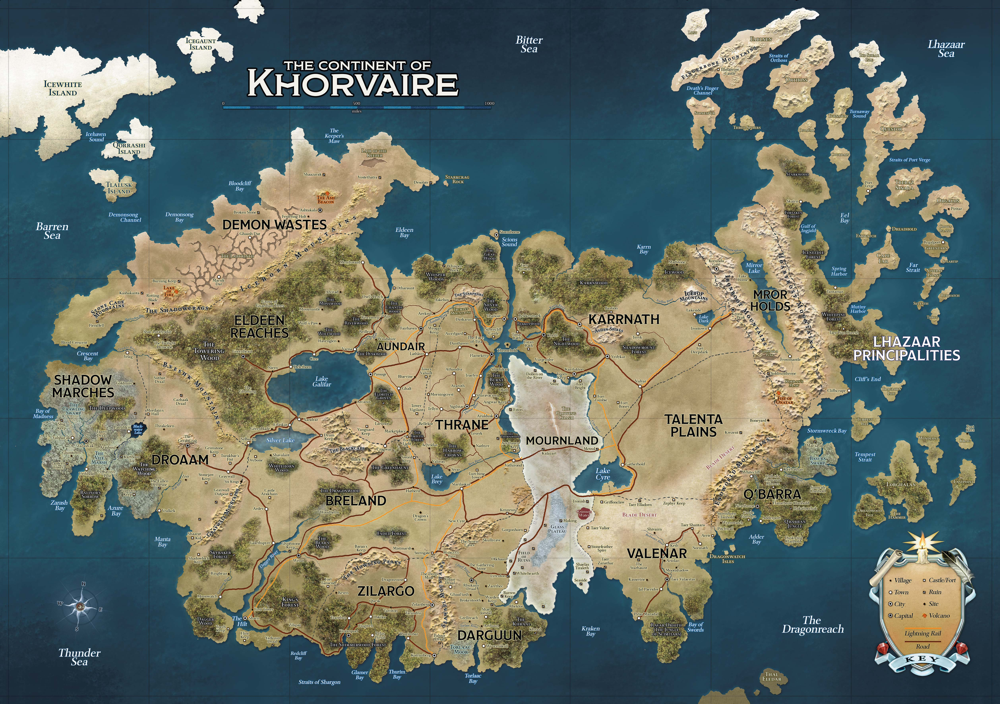

Lore · Start Here
An Introduction to Khorvaire
The myth of the Progenitor Dragons, the fall of Galifar, and the war that shattered the Five Nations.
Every child knows the story of the Progenitor Dragons: Siberys, Eberron, and Khyber. At the dawn of time, these three cosmic beings created the Material Plane, a realm where all ideas would become manifest — a realm that would know war and peace, life and death, order and chaos.
But cruel Khyber sought ultimate dominion over this new reality. She struck Siberys without warning and tore him apart. Eberron wrestled with Khyber and bound the traitor in her coils but could not defeat her. So Eberron became a living planet, a world that would forever contain Khyber's evil.
Shattered Siberys became the ring of golden dragonshards wrapped around the planet, said to be the source of all magic. Eberron is the world, the source of all natural life. And Khyber is the Underdark and the source of aberrations and fiends, forever struggling against her bonds and yearning to destroy the world above.
Real or not, this myth is shared by all races and nations in Khorvaire, the prime continent in the world of Eberron, where an abundance of dragonshards led to advances in magical technology unimaginable elsewhere in the world. Khorvaire is also home to those who have been named “dragonmarked.” These powerful few inherit a magical mark upon their skin that gives them abilities beyond the average person. And thus, the so-called Dragonmarked Houses were born. To this day, they remain neutral forces in the world, striving to maintain their status and influence by means both honorable and insidious.
{kind=link}

The Kingdom of Galifar
In the modern age, the greatest power in Khorvaire was the kingdom of Galifar, which covered most of the continent. This kingdom was divided into Five Nations — Aundair, Breland, Karrnath, Thrane, and Cyre. Though each had a unique cultural identity and possessed their own rulers, they shared one unifying foundation: the rulers of the Five Nations were descended from the Wynarns, the royal bloodline of Galifar.
A Hundred Years of War
But a century ago, Galifar collapsed into civil war with the death of King Jarot il'Wynarn. Conflict over the succession spiraled into outright war, with each nation's leader making a claim to the throne. The conflict has continued to rage long beyond the death of these rulers. Generations have come and gone without knowing peace.
Through a hundred years of violence, the Five Nations have become splintered. The Eldeen Reaches split from Aundair, seeking to save their forests from the devastation of further conflict. The halflings of the Talenta Plains and the elves of Valenar seceded from Cyre, where the conflict is at its greatest. The goblinoids of Darguun reclaimed their ancestral lands from the Cyrans as well, with the aid of soldiers from Breland. The dwarves retreated from Karrnath to fortify themselves deep in the mountains of the Mror Holds. But Breland suffered the greatest loss of land, as the Shadow Marches, Droaam, and Zilargo all gained independence.
Karrnath was nearly destroyed by a plague that ravaged their crops. Starving, and without the aid of the dwarves, they only survived by employing worshippers of the Blood of Vol, who raised the dead to fight once more — much to the fury of Thrane and Aundair, where followers of the Silver Flame considered this blasphemy of the highest order.
The only places in Khorvaire unaffected by the war were the Lhazaar Principalities, home to a nation of pirates, in the east, and the Demon Wastes to the west, home to abominations said to be the spawn of Khyber herself.
We enter, now, into the heart of the war in Cyre, where members of the dragonmarked Cannith house have been hard at work creating some of the fiercest war machines ever devised — impossibly huge works of arcanotech, capable of dealing death on a monumental scale.